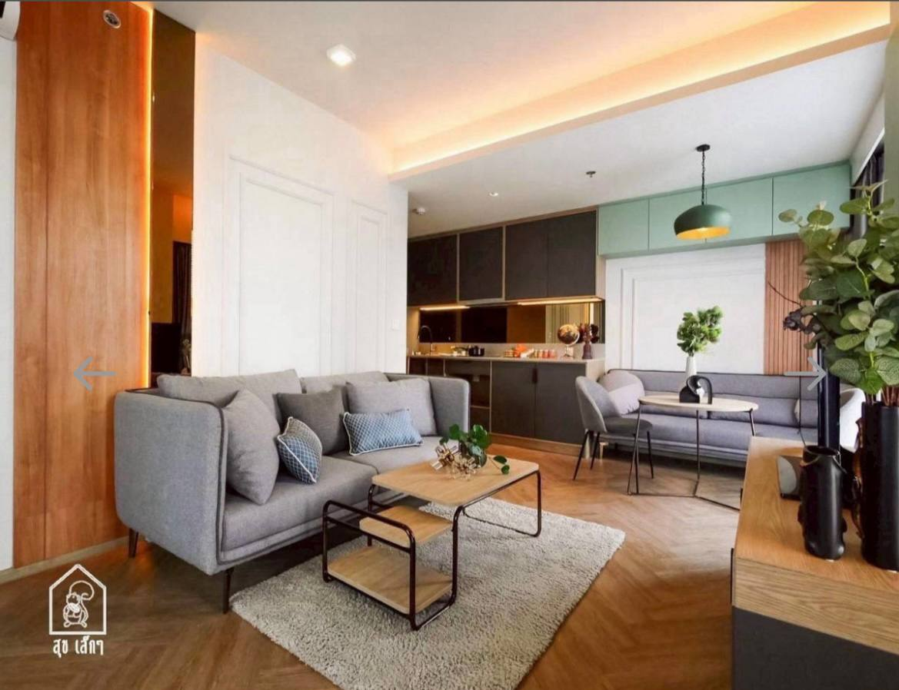
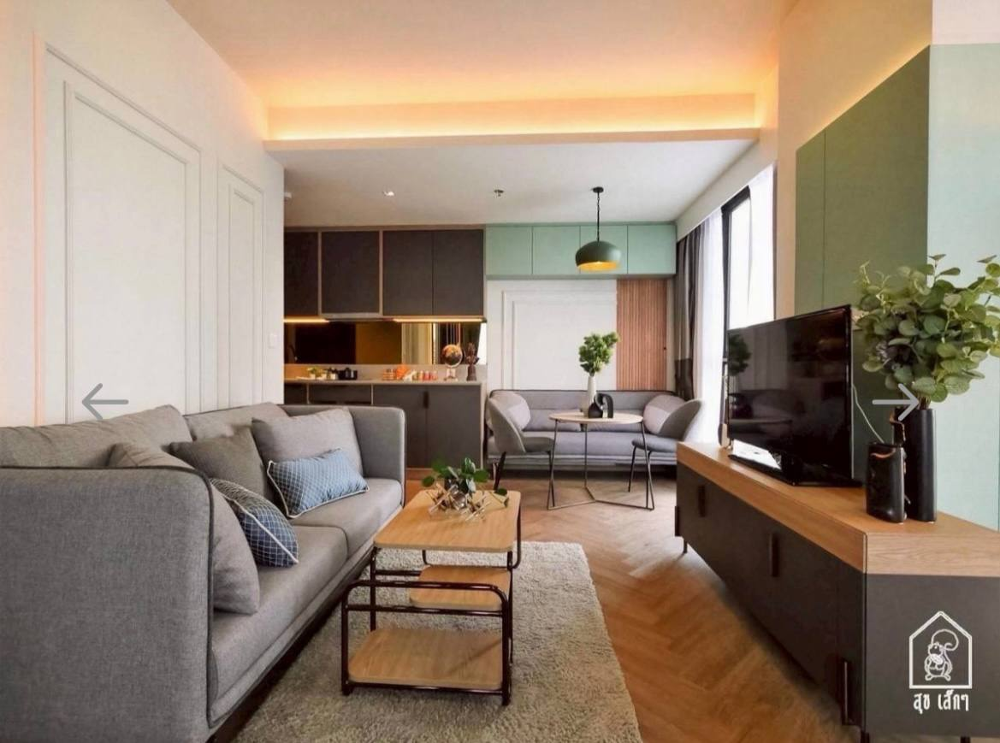
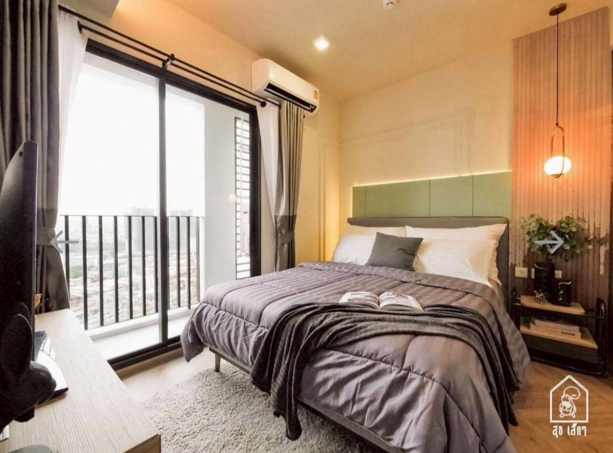
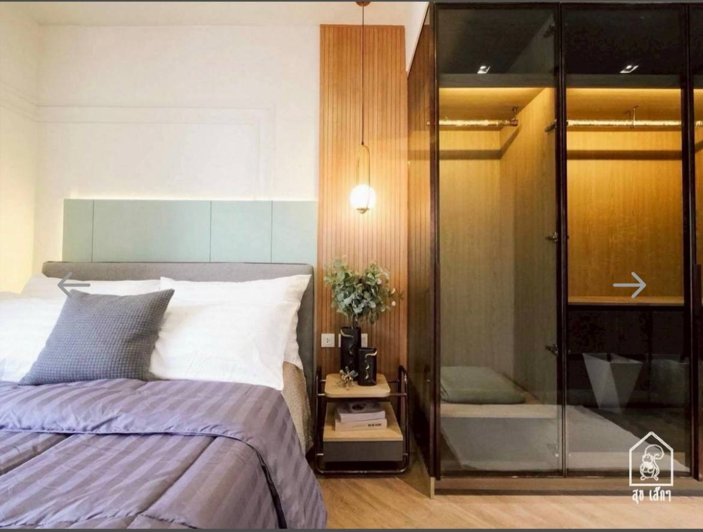
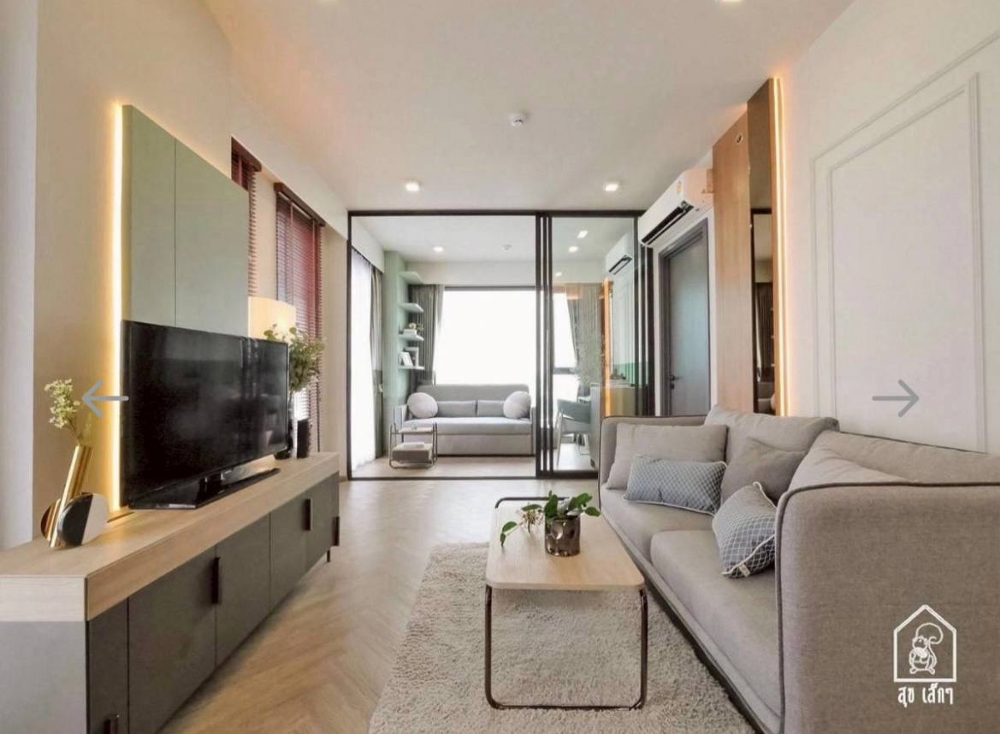
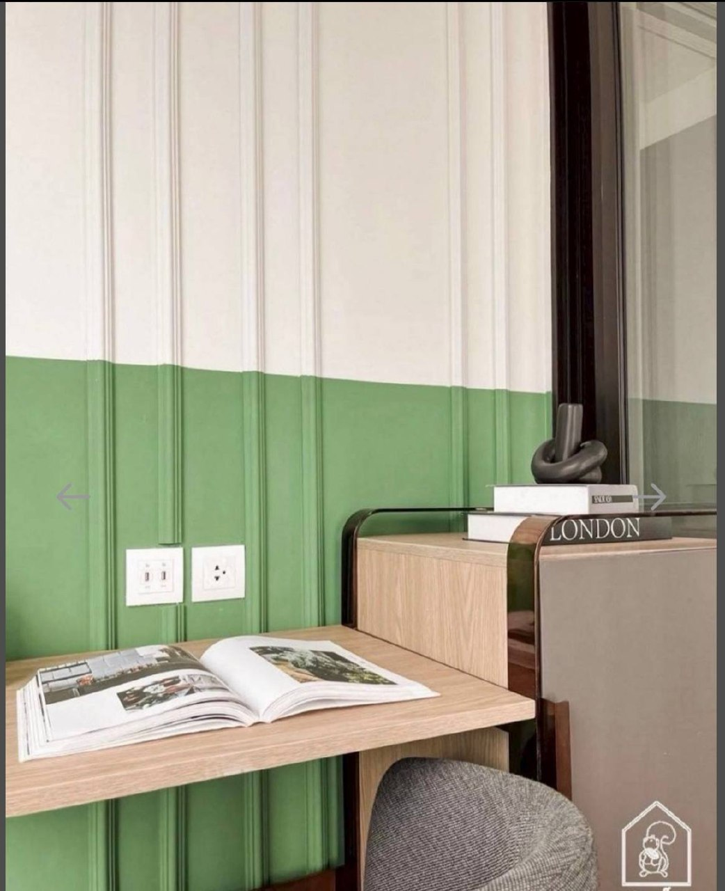
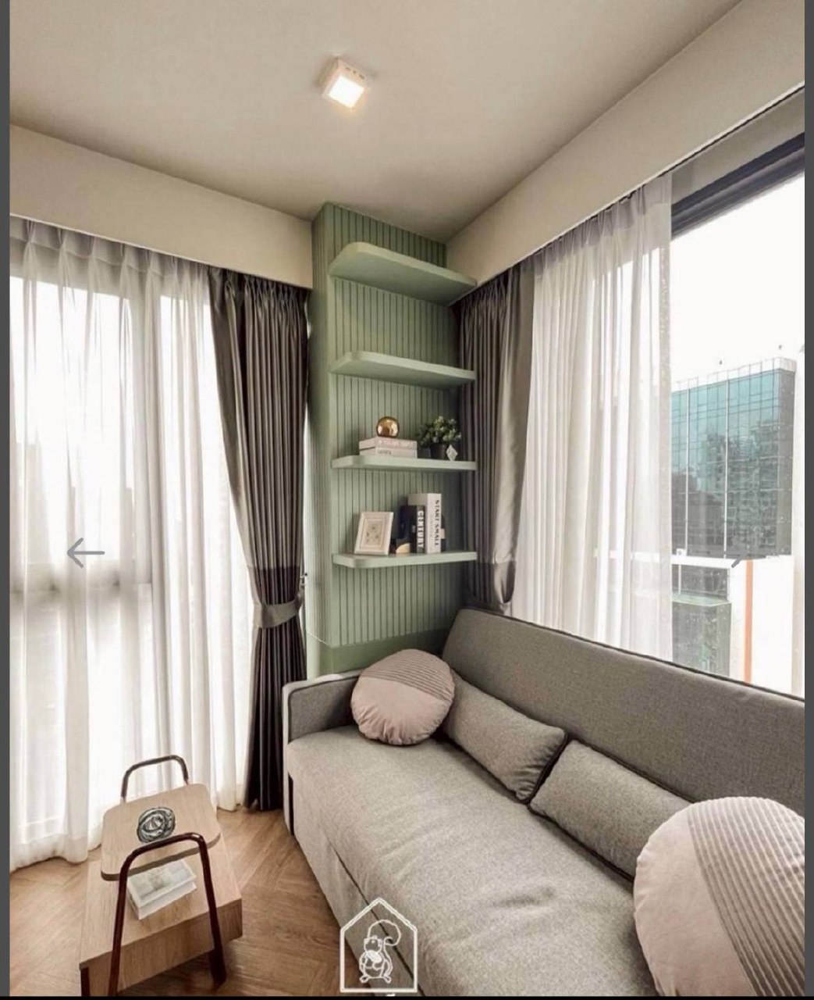
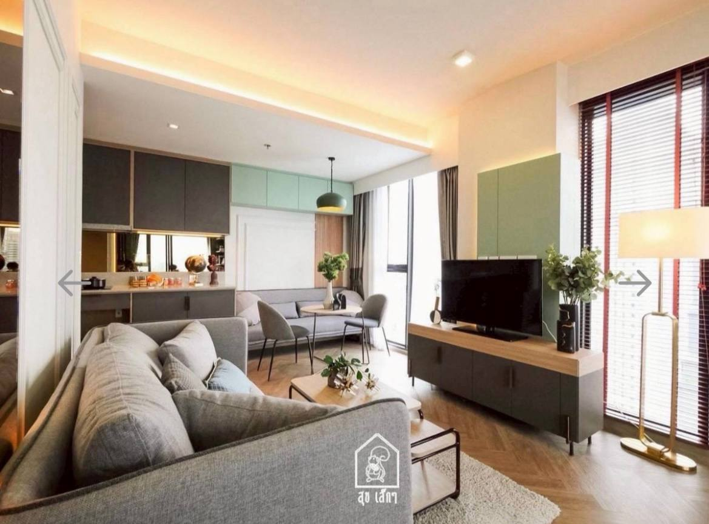

A sharper way to understand this neighborhood: not as one destination, but as a base that quietly gives you convenience, texture, food depth, and access to several versions of Bangkok at once.

Room view 1
Room view 2
Room view 3
Room view 4
Room view 5
Room view 6
Room view 7
Room view 8Samyan Mitrtown connects directly to MRT Sam Yan, Exit 2. That removes friction on hot/rainy days and makes this base feel easier than many places that look better on paper.
Mitrtown’s 24-hour zone gives you a true late-night safety net for food/work/reset. This is a hidden quality-of-life win over “prettier” neighborhoods that shut down early.
You are not trapped in one vibe. From here, Silom/Sathorn errands, Chinatown atmosphere, and Banthat Thong food energy are all realistic moves, not once-a-week missions.
Samyan Mitrtown, chains, groceries, transit, and repeatable food options keep this area low-friction. That matters more over a month than one flashy attraction.
You are well placed for Bang Rak texture, Chinatown nights, Banthat Thong food energy, and Silom or Sathorn access, without having to live inside the busiest parts.
Cheap day, comfort day, date-night day, guest-hosting day, late-night food mission, all of those fit this base surprisingly well.
This is not a luxury district in the obvious glossy sense. Its strength is that it can feel grounded, convenient, and local while still giving you enough ways to eat well, entertain someone, or have a memorable night out without traveling forever.
Start with a café or a drink close to home, then go one level nicer for dinner, then walk a little after. That is the sweet spot here, because the area does not need to overperform to feel good.
This neighborhood is strongest when the plan has rhythm. For example: coffee, wander, dinner. Or easy comfort meal, then a more atmospheric destination. Or local hidden-feeling bar first, then a bigger food zone.
Best for convenience, errands, chain comfort, resets, and low-friction daily life.
Best for local texture, useful everyday spots, and the feeling that you actually live somewhere.
Best for atmosphere, food missions, and guest wow-factor.
Best when you want a more explicit food-hunting night rather than just a practical meal.
Chapter Chula-Samyan wins by repeatability. You can eat well on different budgets, move around without drama, and still have high-upside nights when you want them. It is not just livable, it is strategically livable.
If someone wants postcard river views, luxury-lobby energy every day, or a pure nightlife district at their doorstep, this is not that. If they want a smart Bangkok base that actually works daily, this is strong.
Find your easiest coffee, easiest cheap meal, easiest chain fallback, and easiest walking loop.
Build the couple list. A few repeatable places beat twenty vague possibilities.
Start using the wider map like a personal system, not a wishlist. That is when the area starts getting properly good.